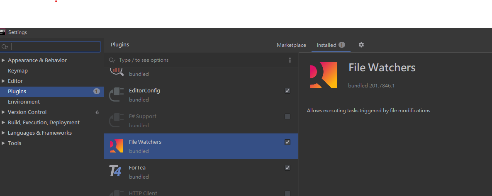
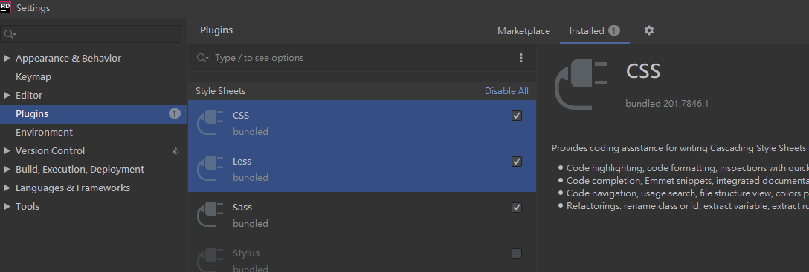
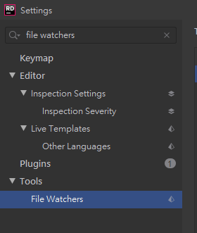
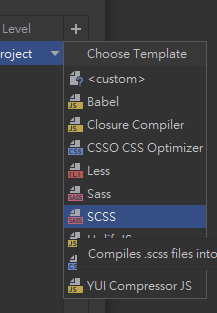
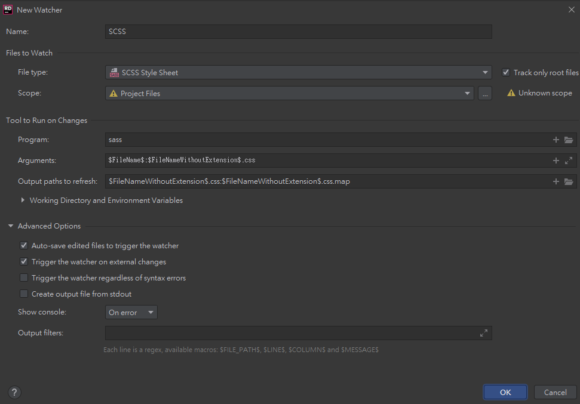
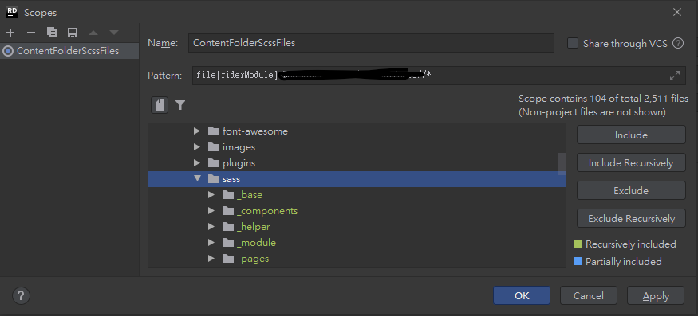
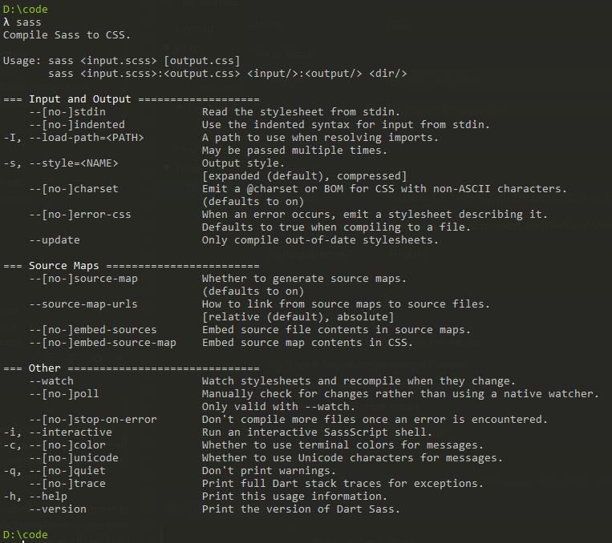

這篇文章在介紹如何在 Rider 中將 Sass、Less、SCSS 編譯為 css 的實際做法
原理
Rider 監控檔案變更，呼叫 node.js 的套件執行編譯工作
準備工作
需要安裝 node.js 及相關的套件
1 | 安裝sass |
確保 Rider 的外掛已經安裝好相關的套件，透過快捷鍵 Ctrl + Alt + S 叫出設定視窗，並於 Plugins 頁籤中，選擇已安裝的套件並查看是否已經包含 File Watchers、Less、Sass。


自動編譯
首先開啟設定( Ctrl + Alt + S)，找到File Wachers

接著新增一個新的監控設定，並選擇我們要監控的對象，此處我選擇 scss

預設的設定像這樣

首先我們需要先指定要監控的範圍(scope)，選擇…出現設定視窗，可以在此處設定好 Scope，此處我選擇硬碟的某個目錄，選擇該目錄及底下的子目錄，符合條件的目錄會變色

之後的幾個設定，包含了
Program 要執行的指令
因為我們剛才有安裝了 node.js 的套件 sass，所以在指令列輸入 sass 就可以執行

Arguments 指令的參數
如果你的輸出檔案跟原始檔案想要不同的路徑，這邊就需要做一些調整
Output paths to refresh
預設的設定也會一起輸出 map 檔案，不需要的話刪除即可
Working directory 工作目錄
預設的 FileDir 指的是該 sass 檔案的路徑，也就是說在這一個地方去呼叫 Program 並給予 Arguments
Advenced Options
依照英文應該都不太需要解釋，但是 File Watcher 會監控檔案的改變，此時如果是外部的程式異動了檔案的話，例如 Git 切換分支造成檔案變更，在這樣的情況下如果不要觸發，就把Trigger the watcher on external changes拿掉
而Show console的部分在剛開始建立設定，測試的時候我都會開啟always，只要設定正常之後我通常會關閉
結論
上述就是透過 Rider 即時編譯的方式，當然也可以不要透過檔案監控，而是透過外部指令的方式去做，這一套流程不只可以用在編譯，當然也可以配合其他需要監控檔案處理事情的需求來做